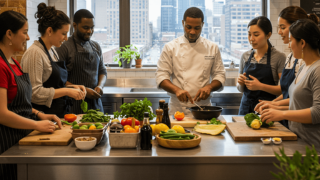
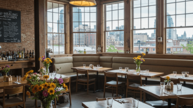

The Healing Kitchen
We quickly became more than just a restaurant, it became a sanctuary where health and hope were served together alongside every meal.
We strive to foster a feeling of community, where we can learn and grow together. Good health is the goal, and everyone deserves a seat at our table. Join our programs today to embark on a new chapter of life; together we will treat our mind, body, and soul.
We take pride in our locally sourced, farm-fresh food. We love to promote a healthy diet, because we understand the impact diet has on our health.
We love to give back to our community. Supporting local farms is important to us because it helps the health and wellness of those we serve.

Our Offerings
Farm-to-Table Restaurant
Come check out our farm for only locally-sourced farm-fresh ingredients! We offer ready-to-go meals for you busy folks, and a large produce market for those that would rather create the magic at home.
Educational Programs
We believe in informing our community of the benefits of a healthy diet. We offer multiple classes and workshops with our award-winning chefs to help teach the best practices for healthy eating. It may seem daunting at first, but a couple of classes with us will surely help boost your confidence in the kitchen.
Community Impact
Without our community we would be nothing. We strive to give back to the community that has given us so much. Join our tribe today to help make a difference in your hometown.